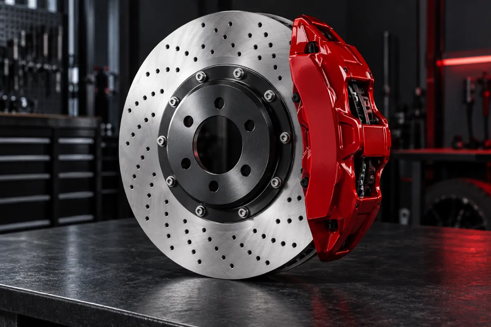
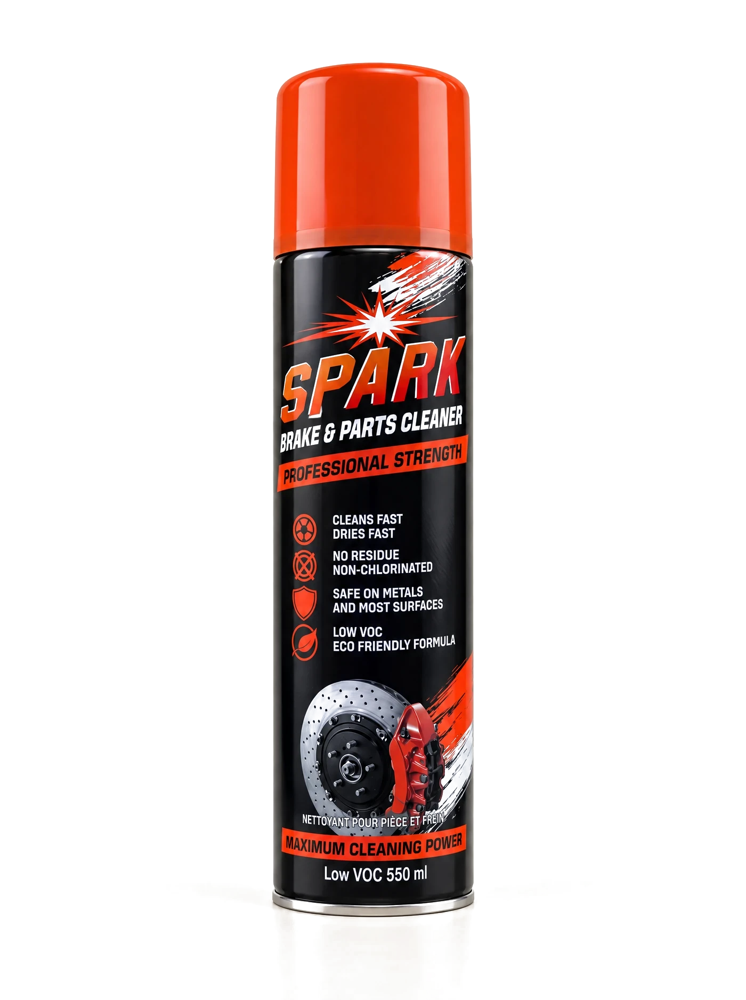
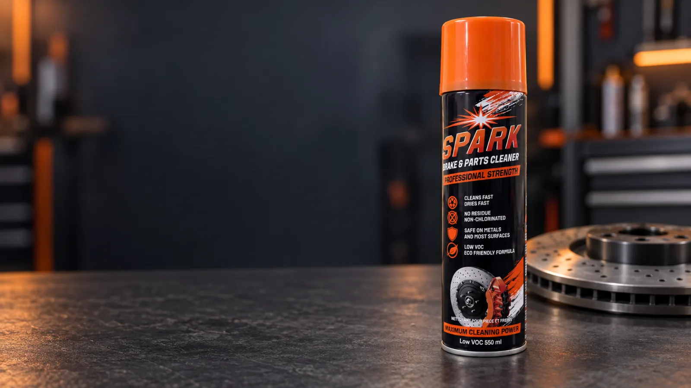
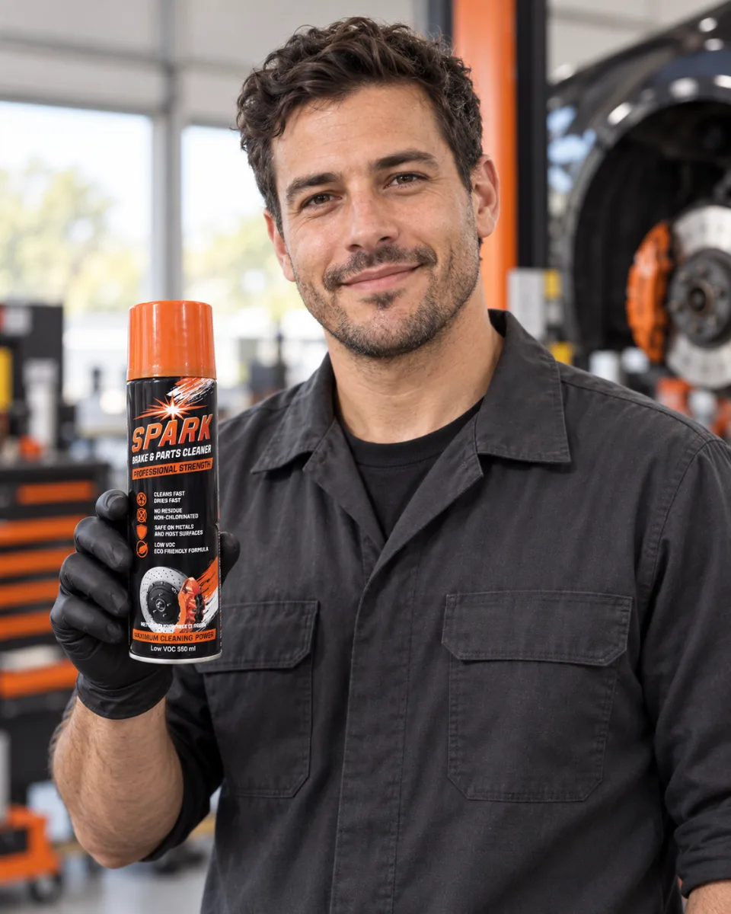

Removes brake fluid, grease, oil and dirt
A strong solvent blend that lifts the contamination brake work leaves behind, so pads and discs bed in against clean metal.
Spark is a professional-strength brake and parts cleaner for the workshop. It cuts through grease, oil and brake dust, then dries without a trace.
Remove the cap to reveal the precision valve. Direct the spray exactly where you need it.
Fast cleaning. Fast drying. A low VOC, non-chlorinated formula that leaves no residue.
A 550 ml steel aerosol for regular workshop use. Suitable for professional and DIY applications.

Cap off, nozzle down, one pass across the disc. No soaking, no wiping, and no waiting for the part to dry before it goes back on the car.
Illustrative demonstration. Results vary with the level and type of contamination.
Four things the formula is built to do, taken straight from the pack.

A strong solvent blend that lifts the contamination brake work leaves behind, so pads and discs bed in against clean metal.
Flashes off quickly and leaves a dry surface. Less waiting between cleaning the part and putting it back on the vehicle.

Formulated for brake systems, clutch components and metal parts. Check the pack before use on plastics or painted work.
A low VOC, non-chlorinated formula as specified on the pack. Professional cleaning power with a lighter solvent load.
Three steps, about a minute. Always read the directions and safety information on the can before use. For the full workshop routine, read our guide to cleaning brakes with brake cleaner.

Shake well before use to bring the formula up to pressure. Work in a well-ventilated area, away from heat, sparks and open flame.
Hold upright, remove the cap and spray the part directly from roughly 20 cm. Cover the contaminated area in one steady pass.
The solvent carries contamination off the part and evaporates. No wiping needed. Let the part dry fully before refitting.
One can covers most of what comes through a workshop, from fleet servicing to the home garage.
| Application | Typical parts | What it cuts |
|---|---|---|
| Brake systems | Discs, drums, callipers, pads, shoes, springs | Brake fluid, pad dust, grease |
| Clutch components | Plates, pressure plates, release bearings | Oil film, friction dust |
| Cars & light vehicles | Everyday servicing, pad swaps, part prep | Road grime, light oil |
| Trucks & commercial fleet | High-cycle servicing, heavy-duty assemblies | Heavy contamination, built-up grease |
| Machinery & tools | Bearings, chains, jigs, shop equipment | Old lubricant, shop dirt |
Professional-grade chemistry, handled professionally. The can carries the full directions, so read them before use.
Pressurised container: do not pierce or burn, even after use. Keep out of reach of children. Always consult the product Safety Data Sheet before use.
Studio photographs of the 550 ml can. Select one to view it at full size. The can itself always carries the full directions and safety information.
What workshops ask us most about Spark and about brake cleaner in general.
Spark is a professional-strength, non-chlorinated aerosol cleaner in a 550 ml can. It removes brake fluid, grease, oil and dirt from brake systems, clutch components and metal parts, then evaporates without leaving a residue.
Spark is non-chlorinated and low VOC. It is made without the chlorinated solvents used in traditional brake cleaners, so professional cleaning power comes with a lighter solvent load.
Chlorinated brake cleaners use organochlorine solvents such as tetrachloroethylene. They are not flammable, but they are more hazardous to breathe and are restricted in some places. Non-chlorinated cleaners like Spark use hydrocarbon and alcohol based solvents that are less toxic, but they are flammable, so they must be kept away from heat, sparks and open flame. See our full comparison.
Work in a well-ventilated area on a cool part. Shake the can, hold it upright, remove the cap and spray the part from about 20 cm in one steady pass, working from the top down so contamination runs off. Let the part dry completely before refitting. Our step-by-step guide covers the whole job.
No. The solvent carries contamination off the part and then evaporates, so no wiping is needed. Let the part dry fully before refitting or operating it.
Spark is safe on metals and most surfaces. Plastics, rubber and painted finishes vary, so test on a small hidden area first and check the directions on the can before use.
Yes. Spark is also used on clutch plates and pressure plates, bearings, chains, jigs, workshop tools and machinery: anywhere old lubricant, oil film or shop dirt needs to come off metal cleanly.
Yes. Spark is extremely flammable. Use it only in a well-ventilated area, never spray it on hot components or near sparks or open flame, do not smoke while using it, and let it evaporate completely before the part goes back into service.
Spark is supplied from 5925 Tomken Rd, Unit 11, Mississauga, Ontario. Workshops, fleets and resellers can send an enquiry for supply and pricing.
Yes. Distributor terms and bulk supply are available. Tell us what you need and where you are through the enquiry form and we usually reply within two working days.

A can that sits right in a gloved hand, sprays from the first press and clears the part so the next job can start.
Distributor terms, bulk pricing, or a technical question about a specific application? Send the details and we’ll come back to you.